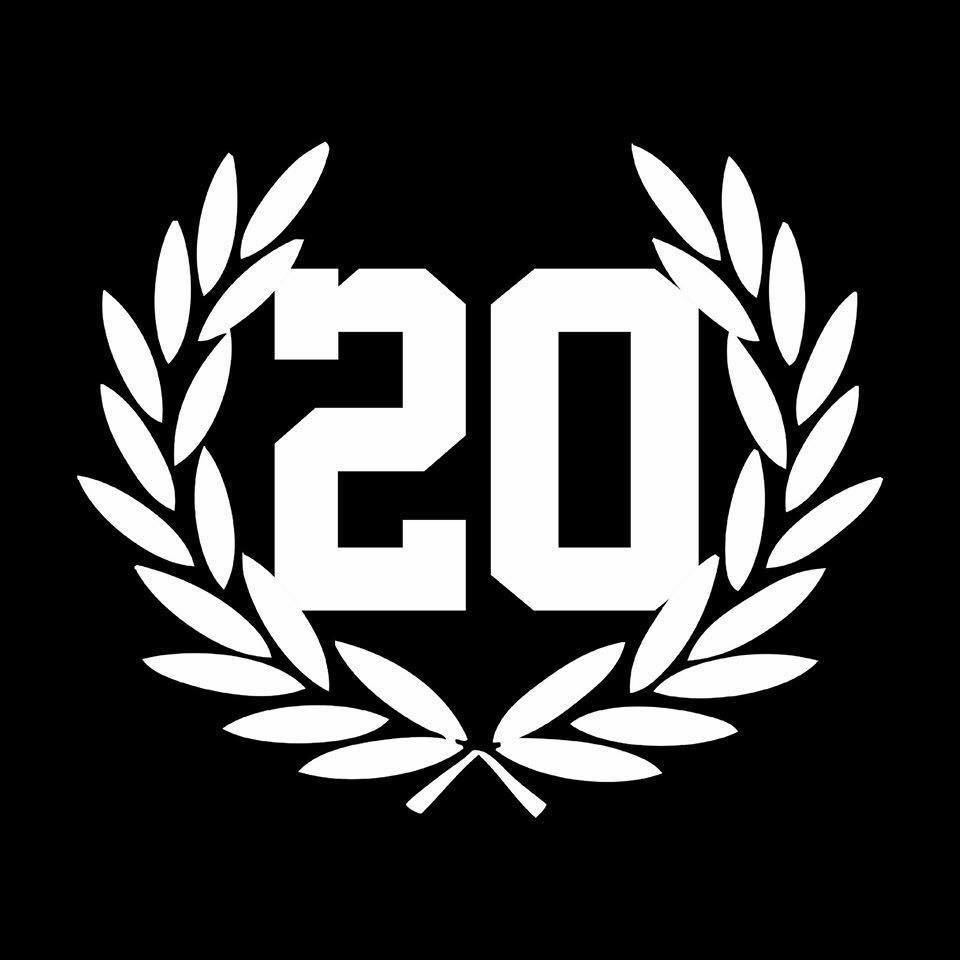

zamalek sporting club ( the most titled club in 20th century)

Zamalek SC,, commonly referred to as Zamalek, is an Egyptian sports club based in giza, known for its professional football team. The history of Zamalek SC originates in 1911, when the club was founded by George Merzbach on January 5 as Qasr El Nile (Arabic, translation: The Nile Palace Club). In 1913 the club moved its headquarters to the present-day intersection of 26 July Street and Ramses and became the Cairo International Sports Club, colloquially known as Nady El Qāhirah El Mokhtalat. The name changed again in 1942 to Nady Farouk El Awal at the request of King Farouk I. The current name of Zamalek was chosen in 1952 following the Egyptian revolution.
NAMES
- Qasr El Nile Club (The Nile Palace) (1911–1913)
- Cairo International Sports Club (C.I.S.C.), a.k.a. El Mokhtalat Club (Mixed Courts) (1913–1941)
- Cairo International Sports Club (C.I.S.C.), a.k.a. El Mokhtalat Club (Mixed Courts) (1913–1941)
- Zamalek Sporting Club (1952–Present)
The word Zamalek is of Turkish origin and comes from when Muhammad Ali, the ruler of Egypt in the first half of the nineteenth century, established camps for the leaders of the Ottoman Army on the island in the Nile.
Crest and colors
.svg.png)
In 1941, the royal emblem of the Kingdom of Egypt and Sudan was the official emblem of the club at the time; when the club's name changed from "Mixed Club" to "Farouk Club" by royal order from Farouk I. After the revolution on the royal rule in Egypt, the club's name and logo changed after the revolution of July 23, 1952; the logo became a mixture of the sporting model and the ancient Egyptian civilization. An icon for Zamalek SC The logo's main colors express peace and struggle and have not changed since its establishment.The home jersey uses the original Zamalek colours.[39] In the upper half of the logo, the arrow that points towards the target appears in a pharaonic uniform as an indication of the common goal between it and Zamalek.
tiltes

zamalek won the egyptian league 12 times
zamalek won the egypt cup 27 times
zamalek won the caf chamions league 5 times
zamalek won the confedrtion cub at 2019
30 June Stadium stampede
During the 30 June Stadium stampede, 20 football fans died on 8 February 2015 in a confrontation with the police at the gates of 30 June Stadium during a league match between two Cairo clubs, Zamalek and ENPPI. The death toll was expected to rise. Most of the dead were suffocated when the crowd stampeded after police used tear gas to clear the fans trying to force their way into the stadium.